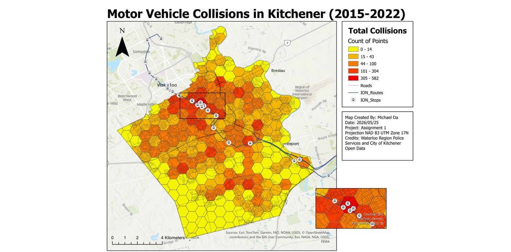
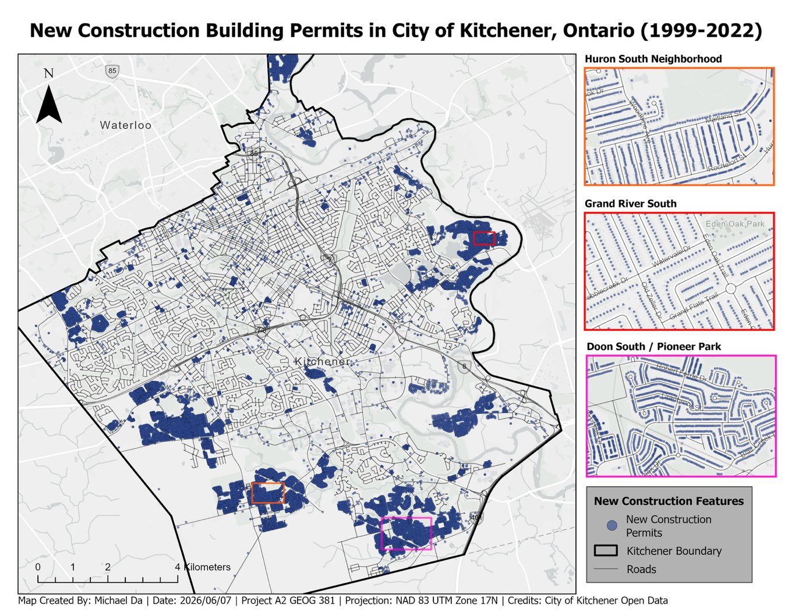
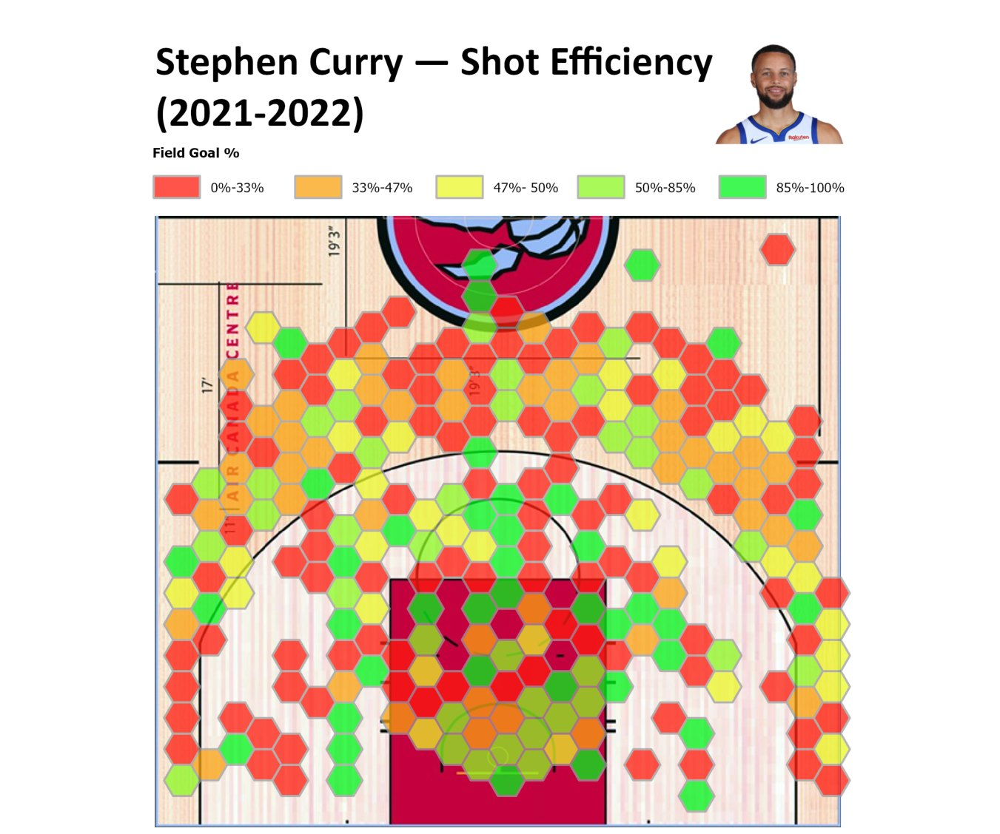
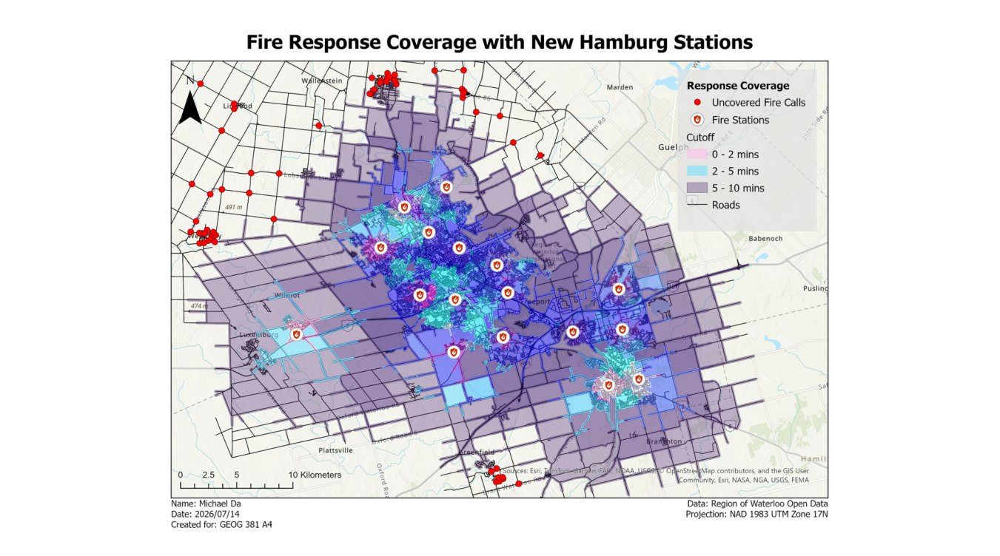
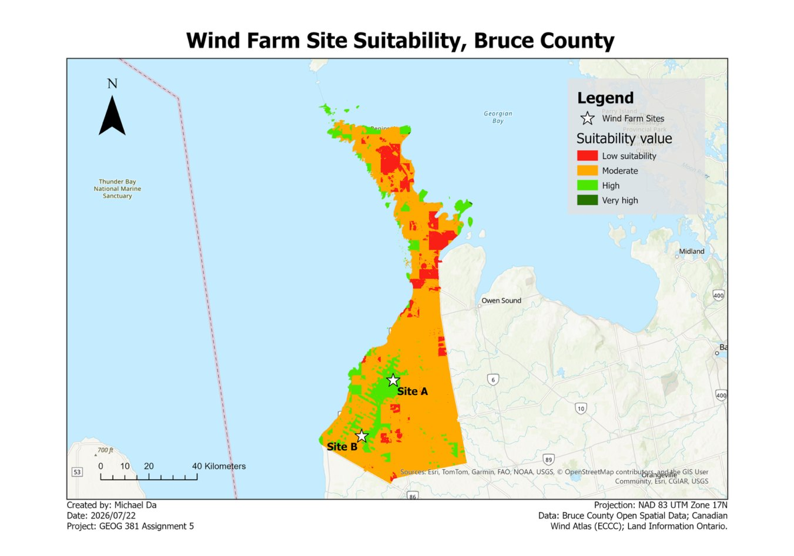

Spatial Analysis
Five analyses where the question could only be answered by looking at where.
Motor Vehicle Collisions in Kitchener
Eight years of Waterloo Region Police collision records aggregated into a hexagonal grid to find where crashes actually concentrate. The hotspots track the King Street corridor and align closely with the ION LRT route and its stops — and a Moran's I test confirms that clustering is statistically significant rather than chance.
ArcGIS Pro · XY Table to Point · Generate Tessellation · Clip · Summarize Within · Spatial Autocorrelation (Moran's I) · Natural Breaks (Jenks)

Geocoding 24 Years of Building Permits
Built a Point Address locator from the City of Kitchener's civic address points, geocoded the full building permit dataset, then animated new construction year by year to show the city's growth footprint pushing outward into Huron South, Doon South and Grand River South. The 3.71% that failed to match turned out to be structural rather than an error: new-construction permits are issued before the address exists in the reference layer.
ArcGIS Pro · Create Locator (Point Address) · Geocode Addresses · Rematch · Definition Query · Time Slider · Animation · SQL expressions

NBA Shot Efficiency, Mapped
The same spatial question answered twice, in two toolchains. First in ArcGIS Pro: a hexagonal grid over a georeferenced court, shots spatially joined to each cell, field goal percentage calculated per zone and differenced against the team average. Then rebuilt in Python to compare Stephen Curry against Nikola Jokić — position shapes everything, with Curry's efficiency spread across the arc and Jokić's concentrated in the paint.
ArcGIS Pro · Generate Tessellation · Spatial Join · Select by Attributes · Field Calculator · Python · Jupyter · pandas · matplotlib hexbin

Where Should the Next Fire Station Go?
The Region of Waterloo had two candidate sites for a new fire station and rural response gaps to close. I built a road network dataset with travel times derived from segment length and posted speed, applied one-way restrictions, then ran service areas and location-allocation across four scenarios. New Hamburg cleared more than twice as many underserved calls as Elmira — though neither site alone fully closes the rural gap.
ArcGIS Pro · Network Analyst · Network Dataset · Service Area · Location-Allocation · travel-mode configuration · one-way restrictions

Siting a Wind Farm in Bruce County
Six criteria — wind resource, and setbacks from dwellings, built-up land, roads, forest and airports — each reclassified onto a common 30 m grid and combined in a weighted overlay, with weights drawn from siting literature and Ontario Regulation 359/09 rather than split evenly. Both recommended sites were then verified independently against every regulated setback, not just their aggregate suitability score, and the weighting was stress-tested at 20% and 50% wind.
ArcGIS Pro · Spatial Analyst · Euclidean Distance · Reclassify · Weighted Overlay · Region Group · Raster Calculator · sensitivity testing
